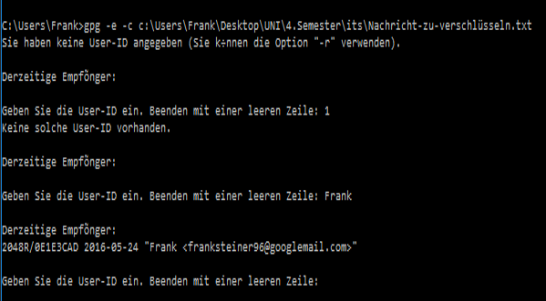

Anwendung symetrische Verschlüsselung
- Zuerst wird bspw. Textdatei erstellt, welche verschlüsselt werden soll.
Diese Datei hat folgenden Inhalt:
"Diese nachricht soll verschlüsselt werden.!!!!"
Sie wird (in diesem Fallbeispiel) unter "Nachricht-zu-verschlüsseln.txt" in "C:\Users\Frank\Desktop\UNI\4.Semester\its" abgespeichert.
- Um diese Datei symmetrisch zu Verschlüsseln, wird nun
gpg -e -c c:\Users\Frank\Desktop\UNI\4.Semester\its\Nachricht-zu-verschlüsseln.txt
in die Konsole eingegben.
- Im nächsten Schritt wird die User-ID (der Name) des Empfängers eingegeben. Nun wird noch eine Passphrase eingeben und die ebens erstellte Datei wird verschlüsselt. Als Fallback bleibt die unverschlüsselte Datei erhalten.


- Um die Nachricht wieder zu entschlüsseln wird folgender Befehl verwendet:
gpg -d c:\Users\Frank\Desktop\UNI\4.Semester\its\Nachricht-zu-verschlüsseln.txt.gpg.
Um die Entschlüsselung abzuschließen wird das Passwort eingegeben. Bei erfolgreicher Eingabe wird der Inhalt der Datei auf der Konsole ausgegeben.